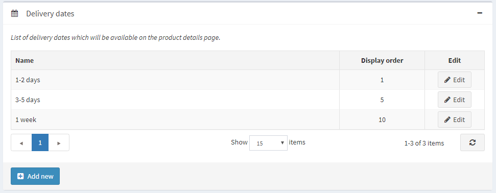
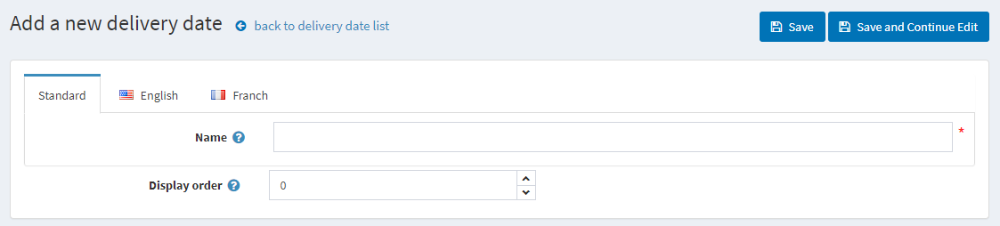
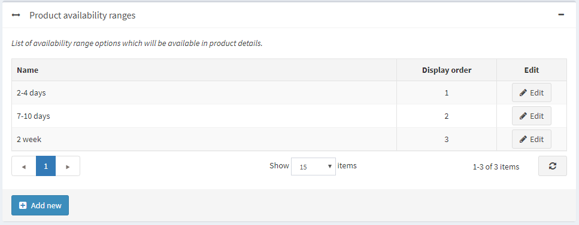
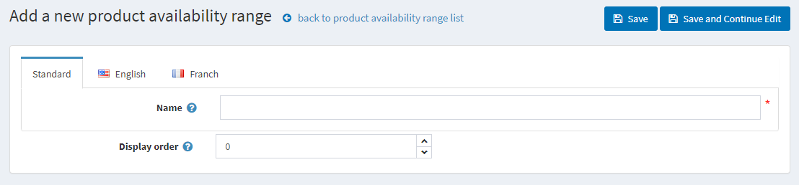

日期與範圍
到貨日期
到貨日期是指顯示給顧客的大約送達時間範圍。到貨日期可以應用於商品，並顯示在商品詳細頁面上。
- 前往 設定 → 運送 → 日期與範圍。在 日期與範圍 視窗中將顯示以下兩個面板：
到貨日期面板

點擊 新增。將會顯示 新增到貨日期 視窗：

- 在 名稱 欄位中，輸入新到貨日期的名稱；通常這是一個日期範圍。
- 在 顯示順序 欄位中，輸入此到貨日期的顯示順序。1 代表列表的最上方。
點擊 儲存 按鈕。
商品供貨範圍面板
在此，您可以設定商品的供貨範圍。這些選項將顯示在商品編輯頁面上。

點擊 新增 以加入您自己的範圍。將會顯示 新增商品供貨範圍 視窗：

- 在 名稱 欄位中，輸入新範圍的名稱，例如：2 個月。
- 在 顯示順序 欄位中，輸入此供貨範圍的顯示順序。1 代表列表的最上方。
點擊 儲存 按鈕。